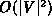
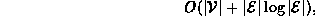
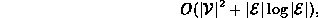

Data Structures and Algorithms
with Object-Oriented Design Patterns in C++
Data Structures and Algorithms
with Object-Oriented Design Patterns in C++
The running time of the DijkstrasAlgorithm routine
is dominated by the running time of the main loop (lines 8-35).
(It is easy to see that lines 3-7 run in constant time,
and lines 38-45 run in  time).
time).
To determine the running time of the main loop, we proceed as follows: First, we ignore temporarily the time required for the Enqueue and Dequeue operations in the priority queue. Clearly, each vertex in the graph is processed exactly once. When a vertex is processed all the edges emanating from it are considered. Therefore, the time (ignoring the priority queue operations) taken is O(|V|+|E|) when adjacency lists are used and  when adjacency matrices are used.
Now, we add back the worst-case time required
for the priority queue operations.
In the worst case, a vertex is enqueued and subsequently dequeued
once for every edge in the graph.
Therefore, the length of the priority queue is at most  .
As a result, the worst-case time for each operation is
.
As a result, the worst-case time for each operation is  .
.
Thus, the worst-case running time for Dijkstra's algorithm is

when adjacency lists are used, and

when adjacency matrices are used to represent the input graph.
 Copyright © 1997 by Bruno R. Preiss, P.Eng. All rights reserved.
Copyright © 1997 by Bruno R. Preiss, P.Eng. All rights reserved.